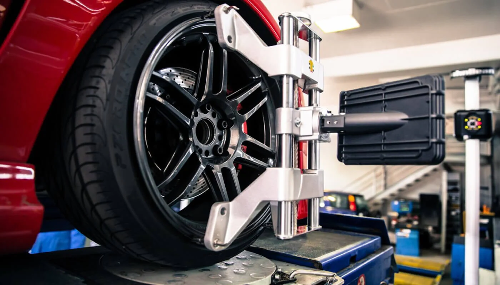

Alineación y Balanceo
Máxima estabilidad y seguridad en la carretera

Precisión en Cada Kilómetro
Nuestro servicio de alineación y balanceo garantiza que tu vehículo se mantenga estable y seguro en todo tipo de caminos. Un vehículo correctamente alineado no solo mejora tu seguridad, sino que también prolonga la vida útil de tus neumáticos y mejora el consumo de combustible.
Nuestro servicio incluye:
- Alineación de dirección computarizada 3D
- Balanceo dinámico de las cuatro ruedas
- Ajuste preciso de ángulos de camber y caster
- Inspección completa del sistema de suspensión
- Verificación del estado de amortiguadores
- Control detallado del desgaste de neumáticos
- Ajuste de la convergencia (toe) y divergencia
- Balanceo de llantas y rines con pesas de precisión
- Verificación de la geometría del chasis
- Reporte impreso con mediciones antes y después
Beneficios de una buena alineación:
🛞 Mayor Vida de Llantas
Evita el desgaste irregular y prolonga hasta un 50% la vida útil de tus neumáticos.
🎯 Mejor Manejo
Dirección más precisa y respuesta mejorada en curvas.
⛽ Ahorro de Combustible
Reduce la resistencia al rodamiento y optimiza el consumo.
🔒 Mayor Seguridad
Mejor estabilidad y control en situaciones de emergencia.
Tipos de Desgaste de Llantas
Desgaste por los Bordes
Causa: Baja presión de aire en las llantas.
Solución: Inflar a la presión recomendada y verificar fugas.
Desgaste Central
Causa: Exceso de presión de aire en las llantas.
Solución: Ajustar a la presión correcta especificada.
Desgaste de Un Solo Lado
Causa: Problemas de alineación (camber incorrecto).
Solución: Alineación computarizada inmediata.
Desgaste en Parches
Causa: Ruedas desbalanceadas o suspensión dañada.
Solución: Balanceo e inspección de suspensión.